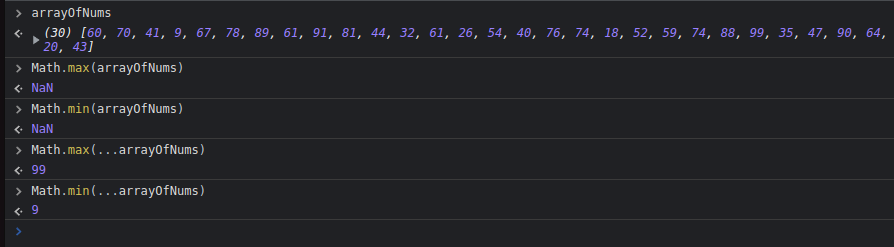
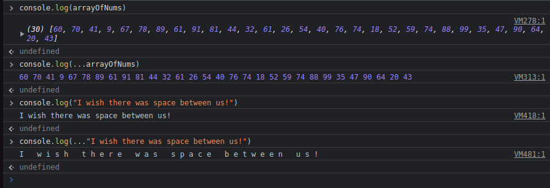

Spread helps us so many things.
The syntax for spread is 3 periods or dots before the array that was passed in to the function.
We can use it to pass in an array into a function that doesn't accept arrays, since we would get NaN if not including it. This Math function needs individual arguments, an array would be passed into the function as a whole.
With spread, it takes each item and analyzes it, comparing with all the other items.
We can use it with console.log too. Here we see the same array, also a string.
The array would normally be logged as an array again. The spread version is converted to a string.
The string is just a logged string, but if spread, it will take each character and spread it.
